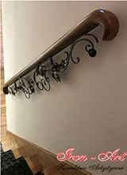
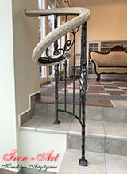
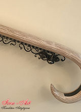
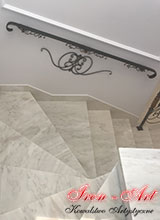
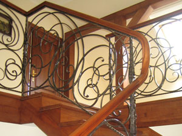
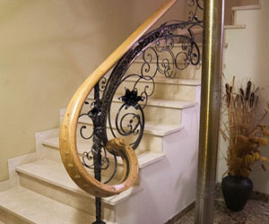

Nasze poręcze do balustrad








Poręcze i pochwyty do balustrad
Proces tworzenia balustrad wewnętrznych w naszej pracowni kowalstwa artystycznego jest długotrwały i wymaga precyzji oraz skupienia. Aby nasi klienci byli w pełni zadowoleni z naszych wyrobów, podejmujemy się współpracy z innymi firmami oraz zakładami stolarskimi.
W naszej pracowni kowalstwa artystycznego z Łodzi, tworzymy balustrady kute oraz wyroby z dziedziny metaloplastyki. Jeśli są Państwo zainteresowani zamówieniem poręczy do balustrad, zachęcamy poniżej do zapoznania się z informacjami na temat zaufanych firm, z którymi współpracujemy. Zarówno zakład Snycerz, jak i firma Paszkowycz specjalizują się w wyrobach stolarskich, w tym w tworzeniu drewnianych poręczy do naszych balustrad!
Firma Paszkowycz

Istniejący od wielu lat zakład stolarski Krzysztofa Paszkowycza, rzetelnie i na najwyższym poziomie świadczy usługi stolarskie. Wyroby tworzone są z naturalnego materiału - drewna krajowego i egzotycznego. Najczęściej jest to jesion, który ze względu na swoją elastyczność, pozwala tworzyć schody i poręcze gięte.
Zakład stolarski Paszkowycz ściśle współpracuje z naszą pracownią kowalstwa artystycznego, tworząc dla nas pochwyty do balustrad, zaproszenia (elementy początkowe balustrady), a także gięte kolanka balustrad.
Efekty współpracy widoczne są szczególnie w trakcie składania balustrady. Aby nasz wytwór był doskonały, idealnie dopracowany technicznie i wysokojakościowy, łączymy siły i wspólnie z zakładem stolarskim tworzymy elegancką, wyjątkową balustradę o giętych poręczach i drewnianych elementach.
Pracownia Snycerz

Snycerka, to sztuka rzeźbienia artystycznego w drewnie. Zakład Snycerz Zbigniewa Bereźnickiego jest jednym z niewielu w Polsce, w którym zajmuje się tym niezwykłym zajęciem.
Nasza pracownia kowalstwa artyscznego Iron-Art współpracuje z zakładem snycerskim, wspólnie tworząc piękne balustrady z nietypowymi poręczami i pochwytami, wyrzeźbionymi artystycznie w drewnie różnych gatunków.
Poręcze i pochwyty do balustrad, wykonywane są w zamyśle między innymi stylu renesansowego, groteski, a nawet tematyki natury. Są to niezwykle ciekawe projekty, które wpasowują się w styl naszych balustrad kutych.
Rzeźbione ornamenty na zakończeniach poręczy balustrad, uzupełniają nasze prace, dodając im oryginalności.